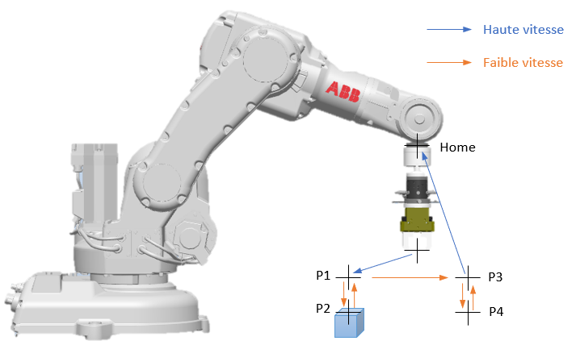
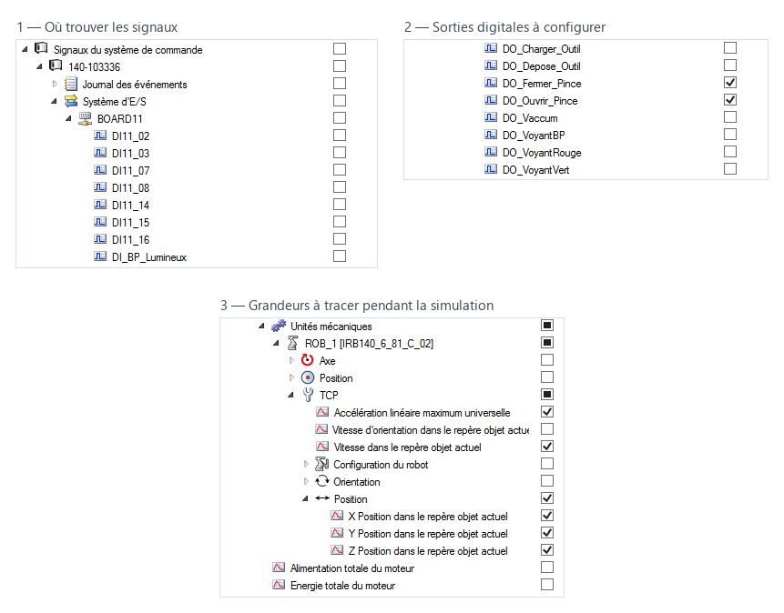
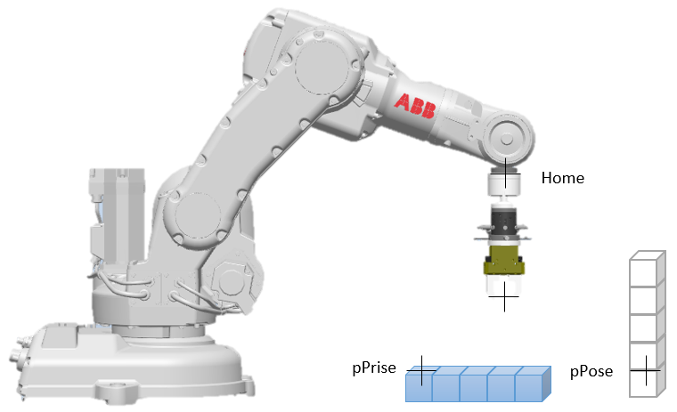

Travaux pratiques — programmation
On passe de la trajectoire à la manipulation : saisir une pièce, la déposer, puis recommencer. Le TP introduit les sorties digitales qui commandent la pince, le paramètre de lissage qui décide de la forme réelle de la trajectoire, et enfin le calcul de positions dans le programme — c'est ce qui permet d'empiler cinq cubes sans apprendre cinq fois les mêmes points.
Les TP se font par groupe de 2 à 4 étudiants : la manipulation d'un robot ne se réalise jamais seul.
Le code doit être validé par l'enseignant avant toute exécution du programme sur la machine.
Le manuel de programmation ABB et le tutoriel PEL sont distribués en séance.
On cherchera dans ce TP à construire une tour à l'aide de cubes.
Les référentiels robot sont le Tool0 pour le repère de la bride du robot, et le Wobj0 pour le repère de base du robot.
Identifier les différentes articulations, ainsi que l'orientation des repères base et outil.
Piloter le robot manuellement en mode articulaire et cartésien, afin de prendre connaissance des différents axes du robot. En mode cartésien, le robot peut être piloté suivant différents référentiels (world, base, outil, objet). Vous déplacerez le robot suivant les référentiels base (Wobj0) et outil (Pince_PZN).
Cf Tutoriel PEL
Quel est l'intérêt de pouvoir déplacer le robot dans différents référentiels ?

Le programme ci-dessous ne réalise que la prise. Les pointillés marquent ce qu'il reste à écrire : c'est à vous de vous en inspirer pour programmer la dépose.
PROC Pick_Place()
! Programme de prise de pièce
MoveJ P1, v1000, z50, Pince_PGN\WObj:= WobjPrise ;
MoveL P2, v100, z50, Pince_PGN\WObj:= WobjPrise ;
Set DO_Fermer_Pince ;
WaitTime 1;
Reset DO_Fermer_Pince ;
MoveL P1, v100, z50, Pince_PGN\WObj:= WobjPrise ;
! Programme de dépose de pièce
……
MoveAbsJ Home, v1000, z50, tool0\WObj:= WobjPrise ;
ENDPROCChaque cible est définie dans le programme par un astérisque. Les valeurs définies sont différentes d'une ligne à l'autre.
Créer un programme dans le dossier de votre groupe.
Cf Tutoriel PEL — 3.3.3 Créer une nouvelle routine
Puis saisir les différentes instructions qui correspondent aux mouvements et positions permettant de saisir un cube. Pour cela vous déplacerez le robot aux positions souhaitées manuellement et enregistrerez au fur et à mesure les instructions. On définira un point situé au-dessus du point d'entrée ainsi qu'au-dessus du point de sortie, ainsi qu'un point Home.
Cf Tutoriel PEL — 3.3.4 Créer une nouvelle instruction
Chaque sortie digitale compte deux états, « 0 » et « 1 ». Set met la sortie à 1 — par exemple Set DO_FermerPince ;. Reset la remet à son état initial — Reset DO_FermerPince ;. WaitTime correspond à une temporisation, ici de 1 s.
Compléter le programme afin de réaliser la dépose du cube. Il faudra déclarer le repère WobjDepose comme repère de programmation actif.
Quel est l'intérêt de créer différents repères de programmation ?
Dans quels cas utilise-t-on les déplacements en MoveAbsJ ?
Configurer les différents signaux listés, et lancer la simulation afin de visualiser les différentes courbes.

Dans le programme, remplacer tous les z50 par z0, puis par fine. Enregistrer les tracés pour les trois cas. À partir des tracés, décrire en vous appuyant d'un schéma l'influence du paramètre zonedata sur la trajectoire et le comportement du robot. En déduire un lissage « optimal » pour ce programme.
On dispose maintenant plusieurs cubes les uns à côté des autres, dont l'objectif est de les empiler.

En se basant sur l'exemple précédent, créer un programme qui va récupérer les 5 pièces alignées en pPrise et les déposer en formant une tour en pPose. Les pièces doivent être alignées au départ et empilées à la fin.
pPrise.trans.x := pPrise.trans.x + 30 ;MoveL Offs(P2, 0, 0, 100), v100, Z0, Pince_PGN\WObj:=WobjPrise; renvoie au point situé à 100 mm au-dessus de P2.
Modifier le programme afin de créer un compteur. Deux variables permettront de définir le nombre de colonnes et de lignes. Ces dernières seront incrémentées jusqu'aux valeurs définies.
Les questions posées au fil du TP, dans l'ordre :
z50 par z0, puis par fine. Enregistrer les tracés pour les trois cas. À partir des tracés, décrire en vous appuyant d'un schéma l'influence du paramètre zonedata sur la trajectoire et le comportement du robot. En déduire un lissage « optimal » pour ce programme.